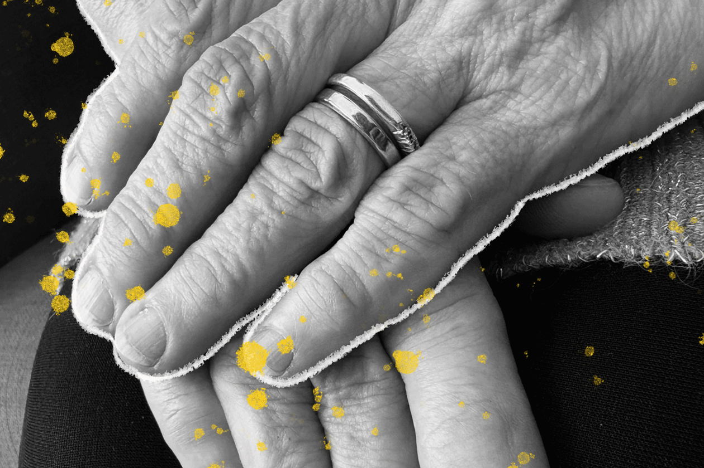
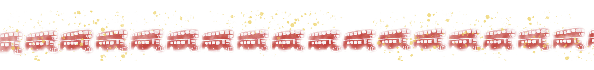
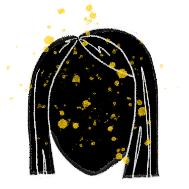
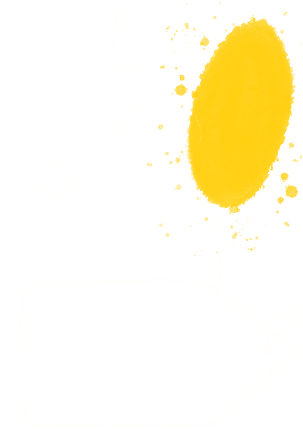

Younger adults, aged 16-24 reported the highest levels of chronic loneliness at 10 per cent, followed closely by those aged 25-34 with nine per cent. People with disabilities were five times more likely to report feeling lonely ‘often or always’ compared to people without disabilities. Gender disparities were also evident with eight per cent of women experiencing chronic loneliness compared to six per cent of men; notably, adults whose gender identity differs from their sex registered at birth, reported the highest levels at 19 per cent.
One in 14 people in England now lives with chronic loneliness. Behind those numbers are people like Bobbie, whose sense of self is fading. As loneliness rises – and is recognised as a global public health priority – some are asking if connection can be designed.
It’s one of those invigorating sunny days in the capital city, the kind that draws people together, outside. But inside the flat at number 119, the sunrays more cautiously seep through the edges of a curtain and 62-year-old early retiree, Bobbie* sits just out of reach of them, her soft outline growing fainter with time.
“I feel like my life is slowly being erased; I feel like I no longer recognise myself,” Bobbie shares from her single orange armchair in her living room.
When the COVID-19 lockdown hit, Bobbie’s world shifted overnight. Gone were the busy routines, the buzz of daily life, and the usual rhythm of social interactions. Without them, her ties with others faded and her will to nurture those connections dissipated.
Loneliness frays your sense of self
Loneliness is more than just a feeling – it is a quiet, steady unravelling.
According to the World Health Organization (WHO), loneliness is not just a social issue; it’s a significant public health concern, impacting both mental and physical health. Aligned to this, this May – during the 78th World Health Assembly – WHO called for social connection to be recognised as a global health priority.
General Practitioner, Dr. Sam Hartley stresses how loneliness can deeply erode mental wellbeing: “People who are lonely often stop seeing the point in looking after themselves. And over time, that neglect eventually takes a physical toll.”
This is an impact that Bobbie is starting to reckon with. “I no longer have the motivation of doing even the most basic things like taking care of myself: I don’t shower, I don’t cook, I don’t eat,” she confesses.
Over the years, loneliness has gradually left its marks on Bobbie’s body. “People tell me I’ve lost a lot of weight – to be honest I can no longer really understand the numbers on the scale. Some of my teeth have rotted away and my hair has fallen out,” she says as she takes off her wig, her rough hands caressing the patches of what is left of her salt and pepper hair.

Captions of the photos
Physical changes are not the only way loneliness erases one’s sense of self; people lose the outlines of who they are.
Identity is so often reflected and reinforced through the presence of others. Hartley describes loneliness as “not so much about being alone – it’s about lacking connection.” As interactions like shared jokes, remembered stories and even physical platonic gestures like hugs are lacking, the sense of self begins to blur.
For 34-year-old history teacher Josh, loneliness was something that “settled like a black feeling in [his] stomach.” Living in London, he often felt invisible amid thousands: “There’s so much happening, so many chances to be seen – but that need never quite gets fulfilled.”
The cruel irony is that the longer loneliness lingers, the harder it becomes for someone to reconnect. People who are lonely are more likely to lack trust – they look negatively at those around them and are less hopeful about positive social interactions as a sort of self-protection.
Sharing that she gets very anxious even when thinking about leaving her house, Bobbie admits that she creates excuses to evade the need to: “Although I have now come to hate my loneliness, I still feel the safest alone. It’s a funny thing, isn’t?”
A lot more people than we think have felt lonely
Bobbie and Josh are far from alone in experiencing chronic loneliness, that feeling of feeling lonely often or always.
The latest Community Life Survey by the Department for Culture, Media & Sport estimate that around three million people in England live with chronic loneliness – roughly one in 14.
At his practice in Greens Norton, a village located in Northamptonshire, Hartley recounts seeing loneliness across a wide spectrum of patients, from a terminally ill man with no one to share his final weeks, to a young mother of three struggling with suicidal thoughts.
Even more striking: only 20 per cent of respondents said they never felt lonely. That means 80 per cent have felt lonely at some point in their life. When used as a benchmark for the population of England, this estimate translates to approximately 46 million people: enough to fill 578,000 double-decker buses bumper-to-bumper, from London to Beijing and back.

What the survey results also highlight is that loneliness is not uniformly affecting people across the country.
Sexual orientations, ethnic backgrounds, socioeconomic factors and urban vs non-urban living also influenced loneliness levels.
Beyond its personal toll, loneliness also exerts pressure on the NHS. “We see patients more frequently simply because they are lonely,” Hartley says. “And the ones we don’t see – the ones who never come – they often end up in severe states of neglect.” Malnourishment, unmanaged conditions, and anxiety spiral silently until intervention is no longer optional – but urgent.
Importantly, the results show that loneliness is on the rise.
Hartley notes that loneliness is still shrouded in stigma. “People will often come to me with symptoms that clearly stem from isolation, but they rarely say, ‘I’m lonely’,” he shares. “It’s only when asked directly that they sometimes recognise it.” That silence contributes to the invisibility of the issue – even as it grows.”
So, how do we stop these figures from growing and erasing more people’s sense of self?
Can digital tools help us redraw connection?

Listen to Gabi
Read the transcript
Finding – and building – community was one of the most important things for me after I moved to a country that was very far away and different from home; while I had a partner, I had no family or friends of my own, and this felt really scary.
I remember one particular situation when, about five months into my new life, my partner had to be away for a week; we were both worried that I would be alone – and lonely.
But slowly, those I had already met started to feel like a community – showing support and being present in their own way: the family I found in my partner’s, the classmates in my language course, the people I connected with in creative bubbles and workshops, and the friends that I made even through meeting apps!
We live in an age where connection is a tap away.
For 30-year-old student, Gabi, moving to a new country that was far away and different from her home felt scary. Digital apps allowed her to connect with new friends: “Slowly, those I had already met started to feel like a community – showing support and being present,” she shares.
However, even in a heavily dominated digital world, loneliness persists.
While Gabi found support through digital tools, Bobbie’s experience shows how easily those same platforms can fall short: “I used to scroll a lot on Facebook, but I didn’t really start a conversation or create content; I would simply share stuff,” Bobbie shares.
Bobbie’s experience mirrors a growing critique of digital interaction. Mindless scrolling and surface-level exchanges on messaging apps and social media may simulate connection, but rarely build it. Algorithms can even steer vulnerable people towards false intimacy – including extremist groups and predatory scams.
Research like the University of Bath’s Loneliness in the Digital Age confirms this: tech that lacks trust, empathy, or intention can worsen isolation.
This concern is shared by the founder and Chief Executive Officer of Replika, Eugenia Kuyda. Replika is an app that allows you to create AI friends and simulate conversations with them – it’s aim is to ease emotional isolation.
Where some users have found comfort, in her TED Talk for TEDAI San Francisco, Kuyda questions if AI companions like Replika can truly heal loneliness, warning: “Relationships that keep us addicted are almost always unhealthy.”
For Kuyda, AI companions walk a fine line. They should be intentionally designed to encourage real human connections, they should act as a bridge: “This technology should push us to meet people, not replace them,” Kuyda stresses.
These digital substitutes reveal a hard truth: without empathy, trust, and care, tech alone can’t redraw connection. It’s not the presence of tools, but the intention behind them that matters. It’s about making real what feels real in the digital world.
Drawing people in
Placing community at the heart of the solution is central.
Hartley believes that social prescribing is a key tool in addressing loneliness: “Sometimes the solution isn’t a pill, but a place or a person,” he explains. “We used to work closely with dedicated link workers, referring multiple patients a week for social prescribing, now, with NHS cutbacks, that team has been reduced. It’s frustrating – because these referrals can change lives.”
This is also the philosophy and recent shift the UK Government has taken in recent years, and the foundation of its first-ever loneliness strategy and its appointment of the first Minister for Loneliness.
Through initiatives like the Local Connections Fund, the Government has supported small grassroots projects – a gardening club in Bradford, a knitting group in Kent, a shared lunch scheme in Glasgow. All are built on a simple but powerful premise: that regular, low-pressure interactions can slowly rebuild people’s sense of belonging.
Beyond the Government efforts, similar initiatives have been appearing all over the country.
One of them is Talkin’ Tables, a charity that creates inclusive, open spaces for conversation by partnering with local businesses. The leader for Chichester’s space, Doug Price, explains how the idea to set up something like Talkin’ Tables came to him while he was collecting Christmas donations in Chichester’s town square: “People didn’t just stop to give – they stayed to chat. It struck me how many were just craving a moment of connection, even with a stranger.”
At Talkin’ Tables, there is no agenda and no expectation according to Price: “People sit, talk, leave – or stay. There’s a power in that simplicity. We are really trying to offer a place where people can feel seen.”
It’s a move towards a culture where connection isn’t left to chance.
ALWAYS A STRANGER | A POEM BY JOHN, TALKIN' TABLES MEMBER
Read the poem
Always a Stranger
His parents moved house so many times
He had to be strong just to survive
Wherever they went he had to go too
Always a stranger in some place new
At each school he made new friends
But he was never really a part
He was always a stranger
Making a new start
Then as an adult he moved many times too
Like a rolling stone
Always a stranger
Mostly alone
Most had lived there all their lives
So knew each other friends and wives
So somebody new stood apart
Always a stranger making a new start
He would walk on the street
Watch others greet
Then sit alone in a bar
Always a stranger
Looking in from afar
Listen to Josh
Read the transcript
For me, loneliness doesn't presents itself to me as a thought. Loneliness is something that I feel it emerges and settles as a black feeling in my in my stomach; which I often felt living in cities like London for a long time, where the overwhelming amount of people and activity and the feeling of – I guess – insignificance, and the desire to be seen amidst all those opportunities to be seen, yet which often was never really fulfilled, I think, is how loneliness manifested itself to me.
Although, in my own life I've never really conceptualised loneliness as a problem; I have never sat down and I've never tried to pin my feelings or house them within conceptual categories. I'd always believe that that black feeling would be somewhat related to loneliness, and my attempt to deal with that feeling would often be things related to the need for either empathy or understanding otherpeople, almost trying to go through that black feeding into other people's lives.
And obviously being surrounded by company and having close friends, you take it for granted that that feeling doesn't manifest itself as often. And I haven't felt it for for a very long time, actually. So, maybe I haven't been lonely.
Intentionally designing cities to connect us
If connection isn’t left to chance, then, what if loneliness then can be intentionally designed out?
That’s the vision behind a growing movement to rethink the built urban space, not just as a backdrop to daily life, but as an active player in shaping it.
Architects, urban designers and passionate citizens are asking how streets, parks and public buildings can connect us to each other – the small, unplanned moments that help people feel part of a wider whole.
UK-born wellness writer and web designer, Niamh, has this topic at heart.
In her 20s, Niamh has just completed a six-week solo van trip across Japan sparked an unexpected revelation: “Although I was in essence alone, at no point did I ever feel lonely, because pretty much every day, I’d have a conversation with a stranger,” she shares.
That daily human contact wasn’t random; to Niamh, was the result of the urban space design.
In the rural Japanese towns Niamh stayed in, she noticed how the built environment subtly created community: public parks with communal sinks and showers, free campsites, bathhouses co-managed by residents, and climbing cafes that doubled as co-working spaces. “People could just exist there together, doing completely different things – someone crocheting, someone climbing, someone writing marketing emails,” she explains with a glimmer of fascination on her face.
It stood in contrast to parts of the UK where social spaces often revolve around a pub and alcohol. What emerged to Niamh was a sense of belonging. “There’s just something about a space that has been designed with the intention and care to create connection. About a space that has been designed to make you feel like you are welcome here,” Niamh adds.
Make @ Story Garden: A place for creating energy
Tucked behind the British Library, in the heart of London’s bustling King’s Cross, sits a patch of calm greenery: Story Garden. Over the years, the garden has bloomed into a community anchor point. Within it sits Make @ Story Garden, a collaborative space built for creation, conversation, and connection.
Make @ Story Garden was born from partnerships between the charity Global Generation, Central Saint Martins, developers like Lendlease, and the Somers Town community. It was imagined as a meanwhile initiative – a temporary studio for social design. Since opening around 2019, it has shown that something temporary can still have a lasting mark.
Running its day-to-day rhythm is, Make’s Technical Officer, artist and educator, Simeon Featherstone. “I don’t teach anything in that sense here,” he clarifies. “I am a facilitator. I give people the time and space – and maybe some support – to work it out themselves.”
Make @ Story Garden isn’t about the finished product, rather, it’s about the creation. “We’re not making things,” Featherstone says. “We’re making energy.”
That spirit is lived out daily. In repurposed shipping containers, people learn to use drills, mould clay, and print posters. But alongside learning these practical skills, they chat, share knowledge, and open up. “People jabber away when they come here,” Featherstone notes. “You start talking about politics, housing, identity… You realise you’re not so different after all.”
As things are made, so too are relationships.
Over time, Make has become a refuge – not just a place to do, but a place to be. “GPs refer patients struggling with isolation to this space,” Featherstone shares. The combination of greenery, creativity, and low-pressure interaction has made Make a quiet form of social prescription: a space for rebuilding connection.
Crucially, this isn’t a top-down initiative. Featherstone explains how decisions affecting the space are taken by listening to the community. “We once floated plans for 3D printers, but when we spoke to the community, we soon realised they had other preferences,” Featherstone recalls. “It’s not about creating for the community; it’s about creating with them – and meeting their needs.”
Though the physical site is now nearing its end, with the garden being relocated, the impact lives on. Featherstone believes that the model – flexible, hyper-local, relational – is replicable, so long as it listens before it builds. “People who came here will go looking for something like it again,” Featherstone says. “And maybe, they’ll even make it themselves.”


Pointing the way
A creative journey
Simeon Featherstone
Simeon Featherstone
Sketching a blueprint for active belonging
This concept of an intentional and caring urban design, one that can foster connection is the ethos of initiatives like The Loneliness Lab, a collaborative project in London exploring how infrastructure can help combat disconnection.
Architect, director and co-founder of IF_DO, Thomas Bryans, was a contributor to the Lab. “The initiative was a direct response to residents in new London developments reporting isolation as their primary concern,” Bryans shares.
The Lab brought together a broad coalition of designers, researchers, and – crucially – people with lived experience of loneliness to look to redraw urban spaces: “Everyone was an expert in their own way,” Bryans adds.
They experimented with simple interventions like chatty benches and open studios to create bumping spaces – in other words, settings that make casual social moments more likely.
Bryans’ team’s project focused specifically on the social housing block behind Stratford Tower.
Not wanting to make any assumptions, Bryan explains how the first thing the team did was put up a very basic, handwritten graph with a line and colourful dots that asked the residents how connected they felt: “There were just two extremes on the scale: ‘I feel connected’ or ‘I don’t feel connected’,” Bryans recalls, noting how the dots clustered heavily at the disconnected end.

And so, the team set up a temporary installation using bright yellow balloons – deliberately vivid against the grey concrete – each tied with a luggage tag inviting residents to write something about their memories, hopes, or feelings about the place. “It was nothing fancy,” Bryans says. “Just a string, a pen, and a question.”

Yet, it stirred something.
One tag read: ‘I’m Somali and I’m new here.’ Another: ‘I remember watching this estate being built.’
Two lives, two generations, two vastly different experiences suddenly visible to each other.
And critically, it all happened just outside residents’ front doors.
“That threshold is important,” Bryans explains. “We’re often passive consumers of space. This kind of design invites people to be active participants. It says: you belong here, you can be part of this.”
The principle is simple: cultivate active participation to gradually build trusting relationships. It’s the fundamental aspect of an intentional urban space blueprint for belonging.
Design can invite, but can’t insist
But not everyone is convinced design can deliver on its promise.
Architect Shaun Matthews, who explored loneliness and space deeply for his master’s and now works with GPAD, cautions against overestimating the built environment’s role. “Design nudges, but it can only do so much” he says. “It doesn’t determine. You can place a chair by the window to invite connection – but you can’t make someone sit in it.”
Matthews estimates that thoughtful and intentional design might account for just 10 to 15 per cent of social connection – the actual impact, however, is shaped by less visible factors: mental health, trauma, cultural norms.
More pressing, he warns, is that systemic barriers often define what gets built, and what doesn’t. Despite growing awareness of loneliness as a public health concern, design solutions that aim to foster connection often fail to gain momentum.
One reason, Matthews notes, is the absence of measurable evidence. “When it comes to buildings, we’re used to engineering metrics: strength, cost, safety. But how do you quantify a moment of connection?”

Because connection is deeply personal and often invisible, policymakers and developers struggle to justify it. In a system driven by return on investment, anything that can't be counted is easily sidelined. “There’s no mandate to do better,” Matthews says. “If a design is more expensive but might make people feel better, the response is: where’s the evidence?”
We know what bad design looks like – anonymous corridors, misaligned doors, windowless kitchens – but proving when a space works is far harder. “What works for one person might alienate another,” Matthews adds. “There’s no universal blueprint for belonging.”
This, however, doesn’t mean design is powerless. It means it works best when paired with policy that values human connection not as a soft extra, but as a vital measure of success.
Listen to Inês
Read the transcript
One thing I’ve realised over time, is that being alone and feeling lonely aren’t the same. I used to think they were, but moving around so much made me realise they’re not.
I’ve spent a lot of time on my own – in new places, with new languages around me, new pets by my side. And honestly, being alone can be really comforting. It gives me room to breathe and reset.
But loneliness is different. It’s not about who’s around you or where you are - it’s about whether you feel understood and seen. And it does show up sometimes, even when I’m in my hometown, surrounded by my family. It’s the feeling of being “without a ground”. When it does show up, I try to remind myself it won’t last. People come into your life when you least expect it. Things shift. And that helps.
Redrawing what’s been erased
Loneliness is not caused – or solved – in isolation. It is shaped by the rhythms we fall into, the systems we build, and the spaces designed without care.
And as 26-year-old communications strategist Inês – who has lived in many different country – shares, loneliness comes in waves: “When loneliness shows up, I try to remind myself it won’t last,” she says. “People come into your life when you least expect it. Things shift.”
But there are solutions to help with this shift. Connection can be designed; it can be grown, built, and even gently facilitated. The actions do not need to be grand; even in their smallness lies great power to meet people where they are.
On her good days, Bobbie sits at one of the outdoor tables at the café near her home. “When I am not feeling too anxious, I hang out here,” she shares. “I chat to a few people, but even when I don’t always talk to anyone, just being here as me helps me feel better.”
Because it’s not about tearing cities down or reinventing the wheel. As Niamh reflects: “There’s so much potential in reimagining places we already have to make them more welcoming.”
This said, for those efforts to last, they must be supported not just by local action, but by broader systemic and structural change. Until connection is seen not just as a feeling, but as infrastructure, it will remain an invisible sketch in every blueprint.
The question isn’t whether we can afford to design for belonging – it’s whether we can afford not to.